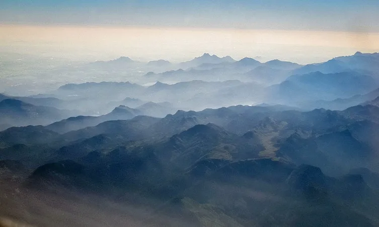

Called the ‘Evergreen city of India’, Thiruvananthapuram is the capital of the state of Kerala. The city comprises beautiful beaches, long stretches of palm fringed shorelines, windy backwaters and historical structures. Along with its natural and historical significance, the city is also popular for its ancient temples that are renowned for their architecture making Thiruvananthapuram one of the most visited pilgrim centers of India.The word ‘Thiruvananthapuram’ is derived from the Malayalam word thiru- anantha-puram, which means ‘City of Lord Ananta’. Ananta is the serpent Shesha on whom Lord Padmanabha (another form of Lord Vishnu) reclines. During the British era, the name of the city was anglicized to Trivandrum and it was the official name of the city, until 1991, when the government renamed the city to Thiruvananthapuram.
Top Desinations
Napier Museum
Named after Lord Napier, this art and history museum was established in 1855. An exemplary example of gothic architecture-style, Napier Museum boasts greatly of its natural air conditioning system. It houses an exceptional collection of ornaments, bronze idols, chariots, and ivory carvings. The museum offers insight into the rich and glorious culture and history of Kerala.
The great contribution made by Rajput, Mughal, and Tanjore schools of art along with the skillful work by several Chinese, Japanese, and Tibetan artists can be found in here. The Japanese leather figures depicting the epics of Mahabharata and Ramayana catch the eyes of tourists.
Napier Museum is certainly one of the most visited tourist places in Trivandrum. Situated in the Museum compound, the ground floor of this place houses India’s oldest zoological garden. Another important feature is Sree Chithra Art Gallery, established by Maharaja Chithira Thirunalin in 1935. The gallery contains epic works from much famed Raja Ravi Varma and Nicholas Roerich.
Amid a well-laid-out garden, the zoological park houses a lake and boat club. The park offers an excellent day outing for children and adults alike. It boasts of 75 different species of animals and birds from India, Ethiopia, and Australia. It is also home to the Lion-tailed Macaque, Nilgiri Tahr, Manipur deer, Indian Rhino, Nilgiri Langur, Asiatic Lion and the Royal Bengal Tiger. There is prominent fauna found here along with habitats of giraffe, hippopotamus, zebra, and Cape buffalo.
Padmanabhapuram Palace
Rejoicing in all its glory, the Padmanabhapuram Palace is located 64 km from Thiruvananthapuram in Thuckalay. This 16th century palace quenches the thirst of art lovers. This fascinating structure has a special air about it. The rosewood carved ceilings and a fine collection of paintings makes it one of the best specimens of Kerala.
Serenaded with fine décor, this palace displays coloured mica windows, antique furniture and Chinese carvings. Ceilings are carved with 90 different floral designs and the Durbar Hall has a glossy floor. Pictures of Lord Krishna, brass lanterns, mural paintings and a four poster medicinal bed add grace to the King’s bedroom. Details like the earthen urns, swimming bath, dance hall, fish carvings on ceilings, Belgian mirrors, 17th and 18th century frescoes and Saraswati Temple sum up to a pleasant structure.
The palace remains open each day from9.00 AM to 5.00 PM. It is to be noted that visits on Mondays are not allowed.
Padmanabhaswamy Temple
Dedicated to Lord Vishnu, Sree Padmanabhaswamy Temple is one of the famous places to visit. This holy shrine is one of the 108 abodes of Lord Vishnu. A large number of devotees throng the temple on multiple occasions.
The place of worship has lent its names to the capital city as ‘Thiru’ ‘Anantha’ ‘Puram’, which means Sacred Abode of Lord Anantha Padmanabha. Dravidian style of architecture is prominent in this holy structure.
The chief attraction is the deity of Padmanabhaswamy, enshrined in a reclining posture. However, the main deity remains that of Lord Vishnu and his heavenly consorts namely, Sridevi and Bhudevi. The sacred idol is covered with a special ayurveda mixture that helps in keeping the plaster intact and clean. Devotees donate a large sum of money and precious articles in this temple. The assets are believed to be value around 90,000 crores. The invaluable donations are kept safe in 6 different cellars.
Padmanabhaswamy Temple should definitely be included in the itinerary of the places to visit in Trivandrum. Indeed, the temple remains impeccable in appearance and religious sentiments attached to it.
Agasthyakoodam

Part of the Sahyadri ranges in Western Ghats, Agasthyakoodam, at an altitude of 1,890 m above sea level, is the second highest peak in Kerala. Sprawling with wildlife, the forests of Agasthyakoodam teams in with rare remedial herbs and plants, and shiningly hued orchids. It is also a bird watcher’s paradise, this fabulous mountain is only accessible by foot from Kotoor, near Neyyar Dam and also from Bonakkad. Trekking to Agasthyakoodam is believed to be healthy and the very air here is supposed to have healing qualities. It is thought that sage Agasthya, the mythological character lived here.
How to Reach: Thiruvananthapuram Central, around 61 km from Bonacaud and the peak can be reached only by a trek.
Things to Keep in Mind: Women are not allowed up the peak and permission is required to trek.